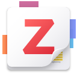

À propos de moi
Concepteur développeur en devenir, je recherche une alternance pour réussir la formation Développeur Fullstack Java Angular de Human Booster.
Je suis titulaire d'une Licence 2 mathématiques, informatique et physique, option informatique ainsi que d'un master de philosophie. Ce parcours atypique fait aussi ma force :
j'ai un pied dans la science comme dans la philosophie et l'éthique. Il m'a permis de croiser logique, programmation et réflexion sur l'intelligence artificielle.
Je possède une grande curiosité, une culture générale à la fois littéraire et scientifique, ainsi qu'une forte capacité d'adaptation.
Actuellement contractuel de la fonction publique au sein des facultés de médecine et de pharmacie, j'occupe le poste de référent fonctionnel des applications
de scolarité.
Bien qu'il ne s'agisse pas d'un poste de développeur, ce travail reste ancré dans l'informatique. Il m'a permis de développer des compétences clés :
analyse fonctionnelle, travail d'équipe, pédagogie et adaptabilité — toutes transposables aux métiers de l'IT.
Passionné par la culture numérique, en particulier internet et les jeux vidéo, j'ai toujours accordé une place importante au digital dans ma vie. Aujourd'hui, je souhaite
m'y investir pleinement et apporter ma contribution à ce domaine que j'aime tant. J'aimerais ainsi achever mon cursus informatique dans les meilleures
conditions.
Pourquoi pas avec vous ?
La formation Human Booster
Human Booster est une école de formation créée en 2007 qui propose diverses formations, notamment en alternance. Sa volonté est de former des
professionnels autonomes et adaptables capables de répondre aux attentes des entreprises. Ses formations s'adaptent donc aux besoins du marché.
Une autre de ses particularités est que la formation en alternance débute par un BootCamp, de septembre à décembre, avant de commencer
l'alternance en janvier.
C'est pour cela que j'ai choisi cette école. J'estime que la formation de développeur Fullstack en alternance, donnant accès au titre de Concepteur développeur
d'applications, est le meilleur moyen de compléter mon cursus informatique et de débuter dans les meilleures conditions ma nouvelle carrière.
→ Consulter la formation Human Booster
Parcours
Les commencements en mathématiques, informatique et physique
J'ai débuté mes études supérieures par deux années de licence math-info-physique à l'université de Limoges. J'y ai acquis des bases solides en algorithmique,
programmation et logique.
Cette licence était centrée sur les sciences de l'ingénieur. Cela m'a permis de faire mes premiers pas dans la programmation, tout en gardant un
enseignement solide en physique et mathématiques. J'y ai notamment appris le langage C, l'algorithmique, le SQL et la gestion
de bases de données.
J'ai également eu l'occasion de découvrir plus en profondeur le fonctionnement des ordinateurs, et plus particulièrement celui des processeurs.
L'école d'ingénieur informatique
À la fin de ma licence 2, je me suis inscrit en première année à l'école d'ingénieur informatique ISIMA.
J'y ai poursuivi mon cursus d'ingénieur, en approfondissant l'aspect informatique.
J'ai choisi cette école parce que je souhaitais me spécialiser davantage dans l'informatique.
Mon objectif était de me professionnaliser afin de travailler dans le développement web ou les jeux vidéo.
Mais, au cours de cette première année, j'ai traversé une période difficile : des problèmes de santé ainsi qu'une perte de sens
m'ont amené à me remettre profondément en question. J'ai donc pris la décision — difficile et risquée — de me retirer pour me recentrer.
La philosophie, un périple intellectuel
J'ai ensuite validé une licence et un master de philosophie à l'Université Clermont Auvergne et à l'Université de Lorraine.
Ce cursus de philosophie a été passionnant et très enrichissant. Cela n'a pas été un renoncement à la science et au numérique, bien au contraire !
J'ai pu y approfondir mes questionnements et découvrir des aspects de la science que je ne soupçonnais pas.
L'informatique et le numérique sont restés au coeur de mes préoccupations. Je me suis d'ailleurs spécialisé en philosophie de l'esprit,
ce qui m'a permis d'explorer des sujets majeurs et passionnants : la conscience humaine et l'intelligence artificielle, des thématiques
particulièrement actuelles.
Retour au concret : référent à l'université
Depuis janvier 2025, je travaille à la faculté de médecine de l'Université Clermont Auvergne en tant que référent fonctionnel pour le logiciel de scolarité PEGASE, jusqu'en août 2025. Ce poste me place au coeur du déploiement du nouvel outil de gestion des données étudiantes, sans relever pour autant du développement informatique pur. Concrètement, mon rôle consiste à :
- tester les fonctionnalités du logiciel à partir de cas réels ;
- rédiger des comptes-rendus pour signaler les incohérences, les bugs ou les obstacles à l'usage ;
- accompagner les équipes administratives dans leur prise en main de l'outil, via des formations et de la documentation.
Je suis en charge de tester les nouveaux modules avec les données réelles des étudiants.
Mon rôle est stratégique : je suis en charge des facultés les plus complexes en matière de maquettes
de formation et de règles de calcul de notes. Si PEGASE fonctionne pour les facultés de médecine et de pharmacie, alors il fonctionnera pour
toutes les autres. En ce sens, mon feu vert conditionne en grande partie le déploiement du logiciel
à l'Université Clermont Auvergne pour la rentrée 2026.
Avec ce poste, je consolide mes compétences en travail d'équipe, en pédagogie, en adaptabilité et en analyse fonctionnelle.
Pas de programmation, certes, mais je garde un pied dans le numérique et j'aspire à aller plus loin.
Bien que mon CDD ait de fortes chances d'être renouvelé, mon plan A reste la reconversion via la formation Human Booster.
L'ambition du développement web
Fort de mon parcours hybride, je souhaite aujourd'hui me consacrer pleinement au développement, et en particulier au développement web. Mon objectif : terminer mon cursus informatique pour boucler la boucle ! C'est pourquoi je veux me former en alternance et obtenir le titre de Concepteur Développeur d'Applications avec l'école Human Booster et, peut-être, avec vous. Je construis actuellement mon portfolio pour mettre en valeur mes compétences techniques et ma démarche. Mon premier projet est le site que vous êtes en train de consulter. En espérant qu'il soit aussi agréable à regarder qu'à lire !
Compétences
Langages de programmation
 HTML5
HTML5 CSS
CSS Java
Java Python
Python C (notions car pratiquées en contexte universitaire)
C (notions car pratiquées en contexte universitaire)
Frameworks
 Angular (familiarisation en cours)
Angular (familiarisation en cours)
Outils de développement
 Visual Studio Code
Visual Studio Code Git
Git GitHub
GitHub
Autres outils
.svg) Suite Microsoft Office (Word, Excel, PowerPoint)
Suite Microsoft Office (Word, Excel, PowerPoint)- Zotero (gestion bibliographique)
Compétences transversales
- Adaptabilité
- Autonomie
- Rigueur
- Communication écrite et orale
- Curiosité
- Esprit critique
Projets et portfolio personnel
Projet Profan ISIMA
Durant mon année d'étude à l'ISIMA, j'ai participé à un projet de groupe nommé Profan.
Le but était de réaliser différents projets en liens avec le pôle plurimédia du lycée Lafayette de
Clermont-Ferrand. Le projet confié à mon équipe consistait en un logiciel de Gestion
de Production Assistée par Ordinateur (GPAO) afin de faciliter la gestion des commandes passées auprès
du lycée.
J'ai eu donc l'opportunité de collaborer avec un élève de BTS et un élève en bac professionel.
Grâce à leurs explications et conseils, j'ai créé une base de données
en SQL via phpMyAdmin, à partir d'un modèle entité-association. Cette base permettait de gérer
à la fois les commandes et les comptes utilisateurs de l'application.
→ Visionner la modélisation phpMyAdmin de la
base de donnée
Mes coéquipiers ont défini le design du site et nous avions commencé à le mettre en place.
Cependant, nous n'avons malheureusement pas eu le temps de mener le projet à son terme.
L'objectif pédagogique de l'ISIMA était clair : nous faire apprendre les langages du web par la pratique,
alors que nous ne les avions pas encore étudiés auparavant. Il a donc fallu apprendre tout en concevant l'application.
Cette approche a été très formatrice, mais cela à eu pour
conséquence qu'il n'était pas possible, pour un unique développeur en cours d'apprentissage, de finir l'ensemble
du site en trois mois, à raison d'une seule matinée de travail par semaine (temps aloué au projet).
Malgré cela, ce fut une expérience enrichissante. Travailler au sein d'une équipe pluridisciplinaire m'a permis
de développer des compétences en communication, en pédagogie et en travail d'équipe.
Apprendre à développer une application via un pratique concrete a été également très bénéfique. C'est une des raisons pour
laquelle je souhaite aujourd'hui terminer mon cursus informatique via une pratique concrète dans un milieu
professionnel.
Bien que le projet n'ait pas pu être finalisé, il est possible de consulter le travail réalisé (code, base de données,
cahier des charges, rapport rédigé à trois) sur le dépôt GitHub suivant :
→ Consulter les fichier du projet PROFAN
Site statique réalisé en HTML, CSS et JavaScript
Il s'agit du site que vous êtes en train de consulter ! on objectif est de présenter qui je suis, mon projet professionnel, la formation en alternance chez Human Booster, mes compétences et mes projets. C'est une première version, qui sera améliorée au fil du temps. J'ai réalisé ce site à la fois pour pratiquer et m'entraîner, mais également pour démontrer certaines de mes compétences.
Veille théorique et pratique
Dans l'optique de reprendre efficacement la programmation et de me préparer au BootCamp de la formation de Human Booster, j'ai effectué une veille théorique, notamment sur le site W3Schools. Ce site permet de découvrir en détail les spécificités de chaque langages ou framework, de s'entrainer via des quizz et de passer, si on le souhaite, des certifications payantes. N'ayant pas encore obtenu de certification, voici ma progression sur le site :

Je m'entraine aussi activement sur le site FreeCodeCamp.
Ce site propose également un apprentissage théorique, mais celui-ci est combiné à une application directe de ce que l'on nous apprend.
C'est un site très ludique et idéal pour apprendre. Vous pouvez consulter mon profil pour suivre ma progression ainsi que les certifications que j'ai
obtenues ou obtiendrai.
→ Consulter mon profil FreeCodeCamp
Réalisation d'une application complète : site pour un photographe
Un projet important que j'aimerais réaliser est un site pour un ami photographe. Il souhaite disposer d'un espace en dehors des réseaux sociaux pour publier ses oeuvres. Avec un ami développeur web frontend, nous nous sommes proposés de créer ce site. Le lien du site ainsi que mon rapport d'expérience seront affichés ici.
Mémoire de recherche sur l'intelligence artificielle
Lors de mon master en philosophie, je me suis spécialisé en philosophie de l'esprit, un domaine qui s'interroge sur la nature
de la pensée humaine. Cette réflexion m'a conduit à explorer un modèle particulier de l'esprit, défendu par les philosophes
McDowell et Putnam, et connu sous le nom de naturalisme modéré.
Partant de cette approche, je me suis posé une question simple mais ambitieuse : une intelligence artificielle peut-elle
reproduire un esprit humain ? Pour y répondre, j'ai analysé les deux grands types d'IA existants — les IA symboliques et
les IA connexionnistes — en examinant leur fonctionnement, leurs capacités, mais aussi leurs limites fondamentales.
Mon mémoire montre pourquoi, selon le modèle de l'esprit que j'étudie, les IA actuelles (et peut-être futures) sont incapables
de reproduire ce que nous appelons réellement « un esprit humain », à moins d'une condition qui, à ce jour, semble irréalisable.
Si ce sujet vous intrigue, vous pouvez lire ou parcourir mon mémoire en le téléchargeant ici :
« Les IA rêveront-elles un jour de moutons électriques ? Putnam, McDowell et le projet d'une intelligence artificielle ».
→ Télécharger le mémoire au format PDF